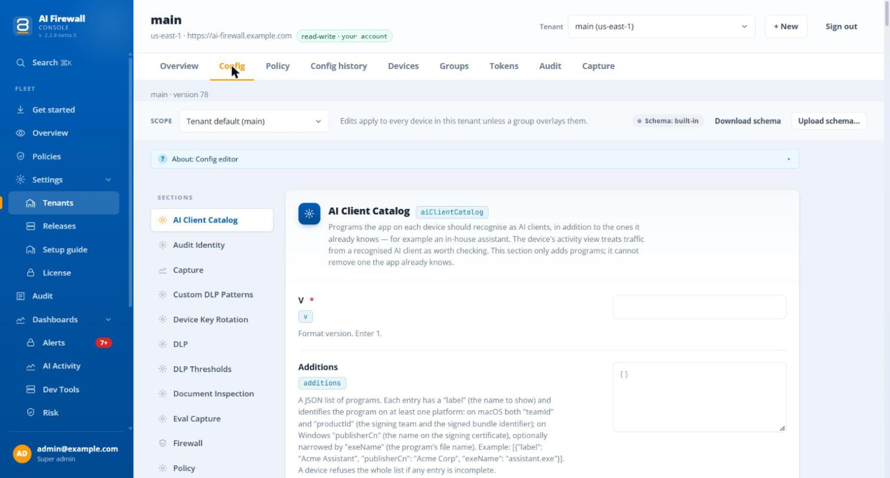
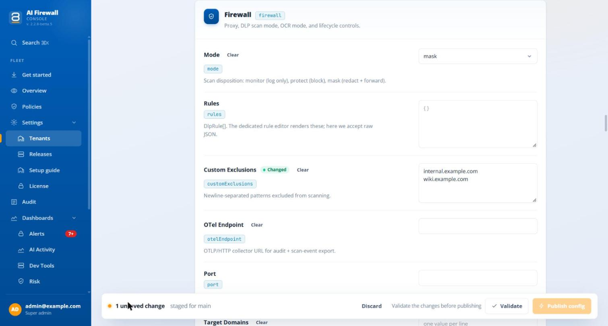
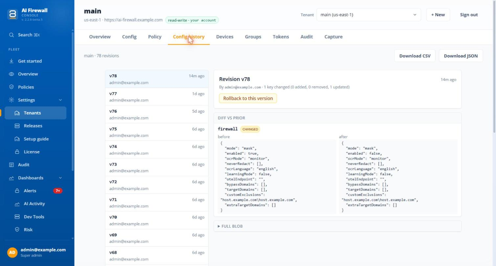
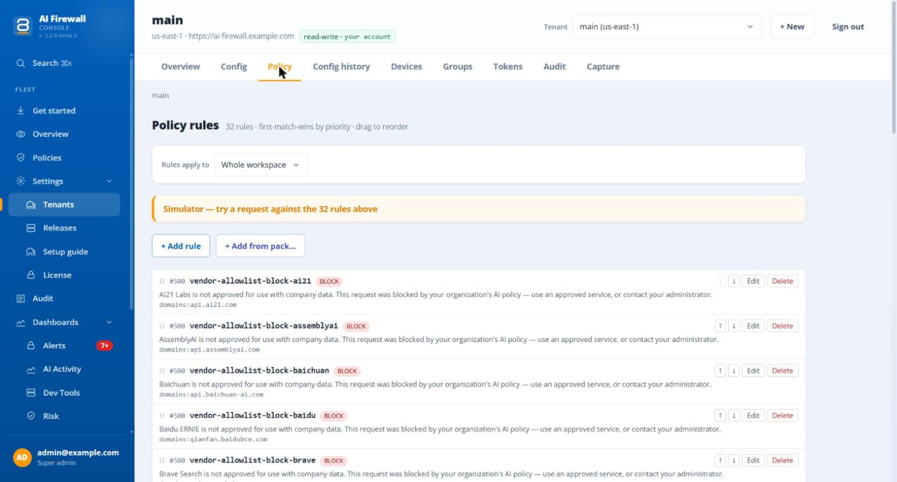

Settings¶
The server sends two kinds of instructions to the agents.
- Settings are values in sections such as
firewall,dlpandsecrets. You change them on the Config tab of a workspace. This page covers them. - Policies say, for each AI service, whether it is allowed, what happens to data, and which uploads are allowed. You change them on the Policies page. See Policies.
Both reach a computer on its next check. An admin or super-admin can change them. For anyone else the buttons look active, but the server refuses.
Protection modes¶
| Word on screen | What the agent does when it finds sensitive data |
|---|---|
| Record only | Sends the request unchanged and records what it found. Machine secrets and the organisation's keywords are still replaced |
| Replace | Swaps each detected value for a placeholder |
| Block | Does not send the request. A prompt or upload with a detection is stopped as a whole, unless its only findings are the organisation's keywords, which are replaced, or it is a search question that an app sends in a web address, which is replaced and sent |
Block stops the whole request
In Block, a prompt or file upload with any detection is refused as a whole, and nothing else in it is replaced. The one exception is the organisation's keywords, which are replaced. The employee sees "Request blocked — PII detected" or "File upload blocked — PII detected".
A new workspace starts in Record only. In the settings the three modes are called monitor, mask and protect.
The Config tab¶
Open Settings > Tenants, pick the workspace in Tenant, and open the tab Config. A page has these tabs: Overview, Config, Policy, Config history, Devices, Groups, Tokens, Audit and Capture.


The picture shows a test workspace. Names, addresses and IDs are examples.
- The scope at the top is Tenant default or Group: name. A group's settings apply only to computers directly in the group. See how groups are used.
- The list Sections is on the left. Each section is a card with its fields. A Changed badge marks a field you changed, and Clear removes it. Changes stay on the page until you publish them.
- Validate and Publish appear only after you change a field. Select Validate. When it says "Looks good", Publish (in the bar at the bottom, Publish config) becomes active. It sends the whole config with your changes laid over it. If someone else published meanwhile, you see "Refresh to see the latest config, then re-apply your changes".
- After publishing, the page shows how many computers acknowledged the new version, for example "Published v7 · all 12 devices acked". It waits up to 60 seconds over the first 200 computers.
- If you leave the Config or Policy tab with changes that are not saved, a window asks Save your changes? with Cancel, Discard and Save. The Policies page does not ask.
The server refuses a config bigger than 64 KB. It checks only the values you changed, so an old value that is wrong does not block an unrelated change.
Config history¶
The tab Config history shows every version of the workspace config, who made it and when.

Select a version to compare it with the one before. Download CSV and Download JSON export the list. Rollback to this version makes a new version that is identical to the old one, and you can add a comment that goes into the admin log. After a rollback the page opens the Config tab. History covers the workspace config only, not groups or policies.
What each setting does on this product¶
The editor shows more sections than the agent uses. These are the ones this product reads.
| Section | What it sets |
|---|---|
firewall |
mode (the three modes above), enabled, pausedUntil (pauses protection until a time, then it comes back by itself), neverRedact and customExclusions (text never to replace), bypassDomains, extraTargetDomains, pseudonymize, and for pictures ocrMode and ocrLanguage |
dlp |
modelId (the detection model) and enabledTypes (the types of data to look for) |
recognizers |
Which countries' national identifiers computers look for. See below |
customDlpPatterns |
Your own patterns. See below |
dlpThresholds |
How sure a detector must be, per type |
requestTimeout |
How long to wait for an AI service |
secrets |
Secret scanning: enabled and the kinds to look for |
documentInspection |
How deep to look inside files and archives |
traceContent |
What the workspace keeps of conversations: metadata, masked or full. See What the workspace records |
auditIdentity |
Whether audit records name the person. See What the workspace records |
capture |
The counters and request details the agents send. See What the workspace records |
runtimeLogs |
Agent log lines for the device page: enabled, minLevel, sampleRate |
resilience |
What AI traffic does when protection is down: "Block AI traffic until protection is back" or "Let AI traffic through, unprotected" |
steering, toolSteering |
Which command-line AI tools are sent through protection |
aiClientCatalog |
Extra AI apps to recognise |
updater |
autoUpdateEnabled, forceVersion |
policy |
Advanced rules. See Policy rules |
These sections are for another product and do nothing here: userRiskProfiling, evalCapture and deviceKeyRotation. Do not turn on learningMode or evalCapture expecting a feature: current agents record no prompt because of them. The setting updater.silentInstall also does nothing: every update still asks the person to confirm. Inside firewall, the fields otelEndpoint, port, targetDomains and learningMode are ignored.
recognizers. The field countries names the countries whose national identifiers (for example tax and ID numbers) computers look for. If the section is absent, computers look for every country. Only identifier checks are narrowed: names, e-mail addresses, phone numbers, card numbers and bank accounts are always checked. The help text says to "Leave empty to look for every country", but the server refuses an empty list. To look for every country, remove the section.
Files that cannot be read are allowed by default
documentInspection.uninspectableAction is allow unless you set it, so a file that the agent cannot read is sent on. Set it to block yourself if you want such files to be refused.
What a computer does before it reaches the server¶
After a restart, before its first check, a computer remembers only the protection mode the organisation set last. Everything else the organisation set starts again from the built-in values until the first check: the lists of text never to replace, the types of data, the policy rules, the thresholds and the secrets setting. A pause lapses too, so a paused computer protects again until it checks in. A computer with no server at all uses the built-in values: Record only and 20 types of data. A workspace starts with 17. Those two lists differ a little.
Policy rules¶
Policy rules are advanced rules for a workspace or a group. Open the tab Policy.

A rule has an id, a priority (lower runs first), an action (pass, mask, block, reroute or log), a reason shown to the person on a block, and conditions. The first rule that matches wins. Evaluate tests rules in the browser. Revert and Save rules appear after a change.
When the workspace has published policies, the rules on the Whole workspace scope are the organisation default's advanced rules. Save rules then publishes a new version of the policies, and the page says "Published policies v8 · 3 rules". A policy of a group or a computer that sets its own rules gets those instead. A blocked service or upload is refused before any rule runs. If the page was loaded from an older version, saving is refused: "Nothing was saved: this tenant has published policies (v8), and this page did not load its rules from them. Refresh, then make your change again."
On the Config tab, the policy section shows a summary with the button Open policy builder, and Edit as JSON.
| Part of a rule | What a computer does |
|---|---|
block, mask |
Works in Replace and Block. In Record only the rule only records |
pass |
Changes nothing |
log |
Sends the request unchanged, even in Replace and Block. The name suggests logging, but the original text leaves the computer |
reroute |
Not carried out. The rule acts as if it had not matched, and the rules below it are not checked. The portal says so |
| Conditions on domain, types of data and minimum size | Work |
| Conditions on departments and file types | Never match. The portal marks them "Not enforced on devices yet" |
| The switch Audit-capture on match | Ignored. Nothing extra is recorded |
A rule that is malformed makes the computer refuse the whole push and keep the last good rules. A group's rules saved here, while policies are published, can be overwritten by the published set, and the page shows a notice.
Text that is never replaced¶
neverRedact lists text that stays in a request even when a detector matches it. Put one value on each line. *.example.com keeps a whole domain, and any other * is refused. customExclusions is a second list that works the same way. Only the organisation can set these lists. A person cannot add to them on their own computer.
extraTargetDomains adds AI services to inspect. bypassDomains turns inspection off for a service.
Custom patterns¶
customDlpPatterns lets you add your own patterns, for example an internal project code. Select + Add pattern. A pattern has an id, a name, a type (a prefix of your own that must not equal a built-in type), the pattern itself, flags and a severity from 0 to 100. Use Test against fixture to try it on sample text.
The portal refuses a pattern that does not compile. It also flags back-references, look-ahead and look-behind, because the agent's pattern engine does not support them. A pattern can be 500 characters long. A bad pattern is skipped and logged. A new list replaces the old, and an empty list clears it.